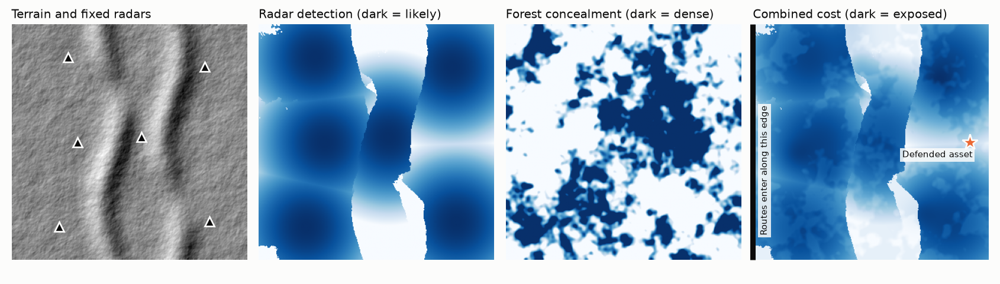
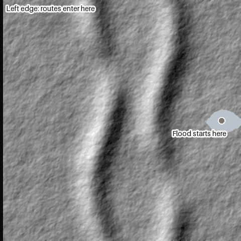
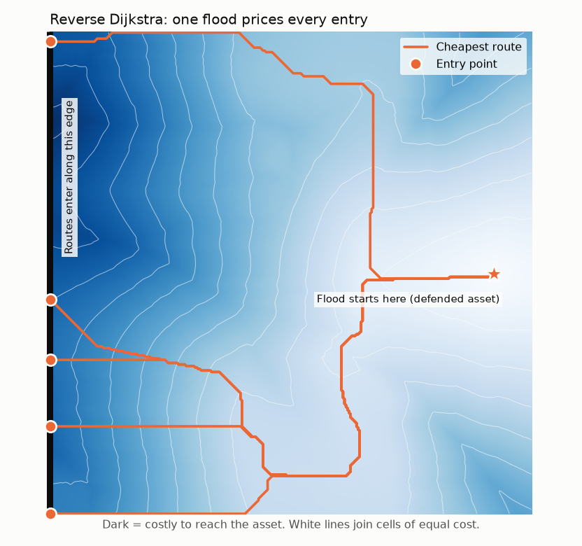
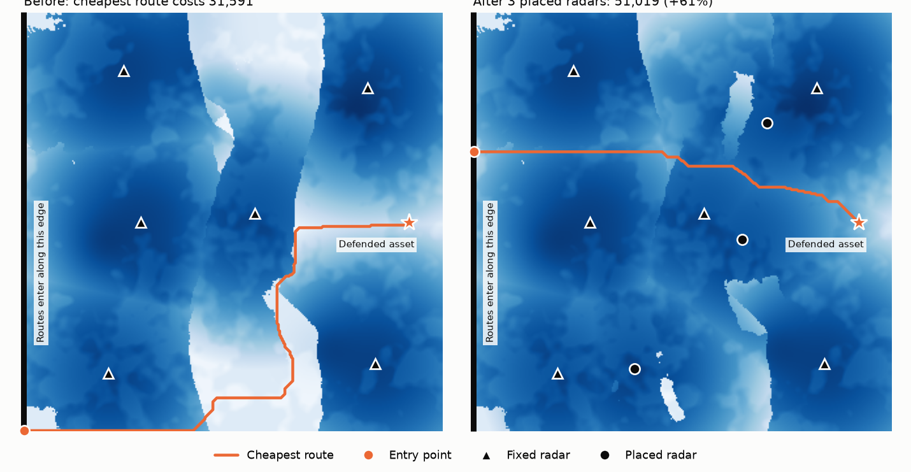

A walkthrough of one run on invented terrain. The question: if a drone is trying not to be detected on its way to a defended asset, which route does it fly, and where should the defender add radars to make even that route costly?
Every map shows the same 32 km × 32 km square, divided into 102,400 cells of 100 m. Nothing on them describes a real place.

From left to right:
A shaded-relief view of the generated elevation. Two ridges run north to south, each with one low pass, and the triangles are the 6 existing radars.
How likely a drone flying 15 m above the ground is to be seen. A ray is traced from each antenna to every cell within 12 km, and the cell only counts if terrain and earth curvature don't block the line. Detection then fades with range. The sharp white areas are terrain shadows behind the ridges.
Generated forest cover, which makes a cell cheaper to fly through.
The single surface that the search runs on. Each cell's cost per metre is
0.10 + 0.40 × noise exposure + 0.20 × (1 − forest) + 2.0 × detection.
Noise exposure rises near generated towns. Radar has by far the largest weight because being detected is the worst outcome.
A route's total cost is this value summed along its length, so it is a unitless exposure score.

This animation is a reverse Dijkstra search. It is "reverse" because it starts at the destination (the defended asset, near the right edge) and works outward, instead of starting from the entry points.
The search keeps a priority queue of cells and always finalizes the unfinished cell that is cheapest to reach. It then checks that cell's 8 neighbours and records which neighbour gave each one its best cost. Grey has not been reached yet, and blue has, with darker blue costing more. The front races through shadows and crawls through radar coverage, because each frame shows a higher cost limit and cheap cells fit under it from much farther away.
The payoff is that one flood answers all 320 entry points. Moving between two cells costs the same in either direction, so the cost outward from the asset is exactly what a drone flying inward would pay. The orange line in the last frames is the cheapest route of all.

Each cell now shows the cost of the cheapest route from there to the asset, so it is lightest around the star. The white contour lines join cells of equal cost, like height lines on a hiking map.
To draw a route, the code starts at an entry cell and follows the recorded neighbours back to the star. The orange lines are the cheapest routes from 5 well-separated entries. They merge as they near the star because once two routes reach the same cell, the cheapest way onward is identical. Notice that they pass through the ridge shadows from the first section instead of flying straight.
| Method | What it answers | Cells expanded | Time |
|---|---|---|---|
| Full reverse flood | Cheapest route from every cell | 102,400 | 75 ms |
| Dijkstra with early exit | Cheapest entry only | 86,631 | 68 ms |
| A* with early exit | Cheapest entry only | 85,662 | 65 ms |
"Cells expanded" is how many cells each search had to finalize. Early exit stops at the first entry cell finalized, which is guaranteed to be the cheapest. A* also steers toward the entry edge using a lower bound on the remaining cost.
On this map A* expanded 1.1% fewer cells than plain Dijkstra. The bound has to assume the rest of the route is as cheap as the cheapest cell anywhere, and radar makes real costs much higher than that. The full flood therefore costs about the same and answers far more, which is why it is the workhorse.

The optimizer is a minimax. The defender chooses radar sites to maximize the cost of the adversary's cheapest route, and the adversary responds with the route that minimizes that cost:
maximize over radar sets S minimize over routes p cost(p | S)
The left map is the starting situation, where the cheapest route slips through a ridge shadow and costs 31,591. The right map shows the best 3 radars out of 16 candidate sites, which are the highest points in a coarse grid. The shadows have mostly closed, and the adversary's best remaining route is forced to cross covered ground.
| Strategy | Method | Cheapest-route cost after placement | Increase | Gap to optimum |
|---|---|---|---|---|
| Greedy | Adds the single best radar, three times | 50,789 | +61% | 0.45% |
| Greedy + swap | Then exchanges one radar at a time while that helps | 51,019 | +61% | 0.00% |
| Exhaustive | Scores all 560 possible sets | 51,019 | +61% | 0.00% |
Every candidate set is scored by solving the adversary's route exactly. Greedy and swap refinement search the defender's choices approximately, while exhaustive search checks every set and provides the true optimum for comparison. Exhaustive search only works because this example is tiny, as the number of possible sets explodes as sites are added.